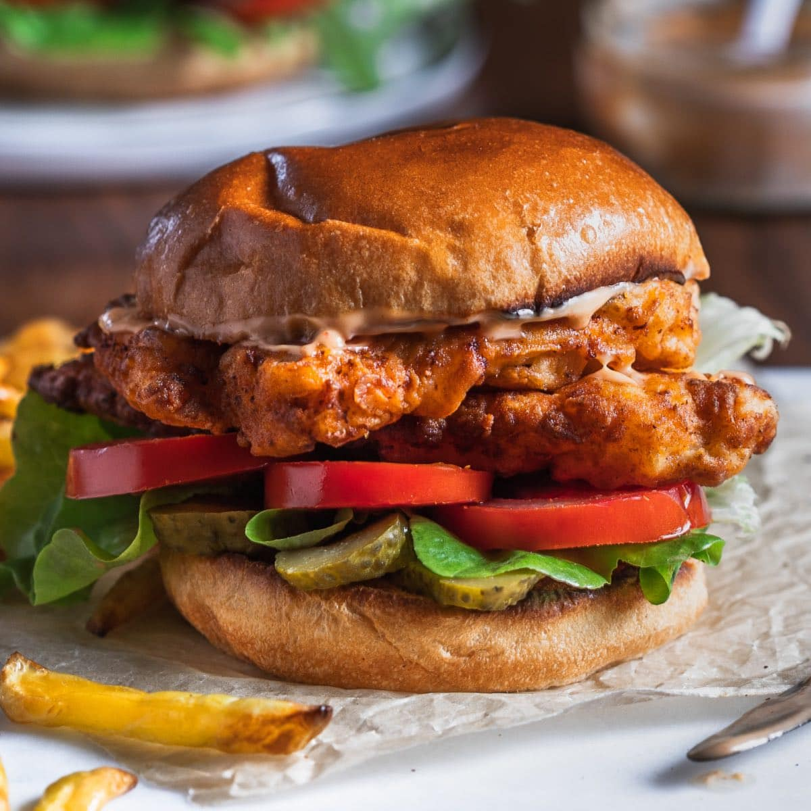
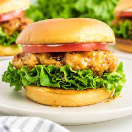
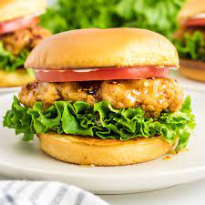

Enchiladas Verdes de Pollo
Origin: Mexico Source: Maggies Kitchen Category: Main Dish
This is one of my favorite dishes to eat, especially my mother’s recipe but I do not know it or have access. There are a variety of recipes to make this dish and this happens to be different from my mother's because she does not place the enchiladas in the oven. I still think that it is a good recipe that should get you something similar.
Recipe
Recipe Ingredients
- 2 lbs tomatillos (about 16 tomatillos)
- 4 serrano peppers (stem removed)
- 2 garlic cloves
- ¼ onion roughly chopped
- 4 cups water (enough to cover the tomatillos)
- 1 bunch cilantro
- 1 teaspoon salt
- 1 tablespoon olive oil
- 1 cup canola oil
- 2 cups shredded chicken
- 12 corn tortillas
- crema Mexicana as desired
- crumbled queso fresco (or cotija)
- diced raw onion as desired
- chopped cilantro as desired
Recipe Steps
- Place the tomatillos, garlic, serranos, onion, and water in a stockpot.
- Cover and bring to a boil.
- Simmer for 7-10 minutes.
- Discard water.
- Remove the ingredients from the stock pot and into the blender.
- Add salt and cilantro to the blender.
- Blend until smooth.
- Heat up oil in the same stock pot used to cook the salsa.
- Pour in the salsa verde and cook for 10 minutes.
- Stir occasionally.
- Heat up oil in a frying pan.
- Fry the tortillas. 1 minute on each side.
- Place on a paper towel to drain any excess oil.
- Repeat with all the tortillas.
- To assemble, place a tortilla in a baking dish, and using your best judgment add about 2 tbsps shredded chicken.
- Roll up the tortilla.
- Make sure the seam side is down.
- Repeat until with the remaining tortillas.
- Heat up the oven to 375 degrees F.
- Cover the tortillas with aluminum foil and place in the oven.
- Bake for 15 minutes.
- Keep in a warm oven until ready to serve.
- Pour a generous amount of the salsa verde on the plate.
- Add the chicken enchiladas to a plate.
- Pour more sauce on top.
- Add the desired toppings – crema Mexicana, queso fresco, cilantro, and onion.
Additional Food images


Peanut Butter and Jelly Sandwich
Origin: American Source: Alex Likens Category: Main Dish
This is a dish that is great at all times of year. Its mix of savory flavors with sweet jelly make sit a favorite dish for many people. This dish is great for any situation whether you are on the go, in a rush, or just looking for a tasty meal in your home.
Recipe
Recipe Ingredients
- Bread
- Peanut Butter
- Jelly
Recipe Steps
- Take two piece of bread and place them on a plate
- Put a thick layer of jelly on one piece of the bread
- Put a thick layer of peanut butter on the other piece of the bread
- RPut the two pieces of bread together so they face each other
Additional Food images


Spicy Chicken Sandwich
Origin: America Source: Original recipe! Category: Main Dish Recipe
Recipe Ingredients
- 1.5lb chicken thigh
- 2 tbsp garlic powder
- 2 tbsp smoked paprika
- 1 tbsp cumin
- 1 tbsp black pepper
- dash/pinch of salt
- 3 cups of flour
- 3 tbsp oil
- 1 tbsp hot sauce
- 1 cup preferred hot sauce
- 2 eggs
- 1 tsp black pepper
- dash salt
- 4 tbsp melted butter
- 4 hamburger buns
- crinkled pickles
- tomatoes
- lettuce
- Chipotle Mayo
Recipe Steps
- Wash your chicken and leave it to rest in a bowl
- Begin working on your marinade. In a medium/large bowl, combine your hot sauce, eggs, black pepper, butter, and salt one-by-one. Mix until fully dissolved
- In a separate bowl, combine flour, garlic powder, paprika, cumin, black pepper, salt together. Whisk thoroughly.
- Prep your chicken thigh by poking holes with a fork across its surface on both sides. Place your chicken into the marinade mix and let rest for 1-2h. (if speed is needed, can do a quick soak of 10-15min)
- Place your marinated chicken into flour mixture and toss. Place back in marinade and redcoat. Repeat 2-3 times.
- Prepare your vegetables and set them aside.
- Grab a deep pan and add your oil on medium-high heat. Fry in oil for 4-5min on each side.
- Remove chicken thigh and toss in 1tbsp hot sauce before plating.
- Combine the buns, toppings, and chicken and serve!
Additional Food images

 
